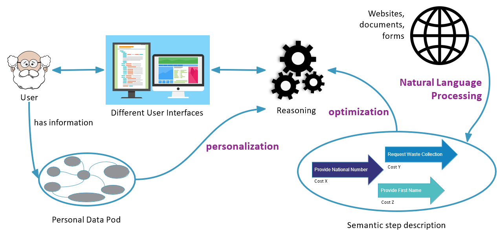

OSLO-STEPS Overview
Introduction
Suppose we have a fictional person, let's call him John, who wants to move in the near future. In order for John to move, there's a wide range of government steps he has to complete. At the moment, all these rules are hardcoded in the Public Service System, but there's a few problems with this approach:
- Duplicate effort for citizens (“It’s as if every next form asks for the same things”)
- Not personalized (“I can’t remember how many times I’ve been asked to fill in my birth date”)
- Outdated applications
As you can probably predict, this is not a scalable, future-proof solution. It's difficult for the end user, who has to go through a lot of repetitive steps, but it's also not transparent for the policy maker, because government regulations are becoming more and more cluttered.
The FAST project
That's where the idea of the FAST project began to take root: "Generate workflows on-the-fly from more fine-grained steps". Every end user gets a seamless and tailored user experience, the policy maker has an easy way to manage regulations and the application owner can easily keep track of the most up-to-date data available.

As you can see in the image above, the FAST project is based around four core building blocks
1. OSLO-STEPS
Composing a customer journey, e.g. moving into a new house, has to consist of fine-grained interoperable steps. Luckily these interoperable vocabularies already exist. In Flanders we have the OSLO project (Open Standards for Linked Organizations), with vocabularies like 'OSLO-Persoon', 'OSLO-Organisatie'... to describe personal data. Higher up the hierarchy there's the European ISA (Interoperability solutions for public administrations, businesses and citizens), with 'Core Person Vocabulary', 'Core Public Service Vocabulary'... And finally there are common standards, like 'Schema.org' or 'W3C Vocabularies'. They are interoperable and some of them are an implementation of the other, e.g. OSLO-Persoon is derived from the European 'Core Person Vocabulary'. The purpose of OSLO-STEPS is to describe user journeys as sequences of conditional steps for governmental public services, from the user perspective. As a possible application, a planning-engine is supposed to build plans given the steps to reach a goal. OSLO-STEPS consists of three main things: the steps, the status and the target. For example, if a citizen wants to move to another city, example steps are: filling in their personal information, submitting a waste request... A status is something we already know, e.g. their telephone number. And the final goal is then to move and request grants. These OSLO-STEPS are based on existing vocabularies, like the OSLO vocabularies, ISA, schema.org... All these procedures are decentralized and applicable on the use case and many sub-procedures are available in other procedures. These decentralized procedures can be grouped together to create a seamless user experience.
2. Journey Composer
The Journey Composer uses web reasoning to generate a personalised customer journey. Users won't have to fill in the same information twice by removing duplicates and linking authentic sources. The Journey Composer also takes care of generating alternatives. A user can submit his personal details by filling in a form on a website, but another option is using his ID card reader. The different options do have some metrics associated with them, e.g. a cost, a duration, a success rate... These metrics decide the best possible options for the user.
3. UI Generator
The user needs to have the option of choosing between multiple different interfaces. If you're accustomed to using an online form of your local munincipality, a UI can easily be integrated in the website. Other options are a Chatbot on the website of Flanders, a Voice UI on the website of the Federal Government... The key is that these portals are easily accessible and simple to integrate in existing platforms. The user has many options and can choose the best one suited for their needs.
4. Feedback loop
What if the application could be smart enough to automatically improve its user experience based on the user’s behaviour? Through artificial intelligence, the process of completing a journey can be optimized and fine-tuned to the user's needs. The different options while completing a journey will be recommended based on the user's previous behaviour, so the user will face a tailored user experience.